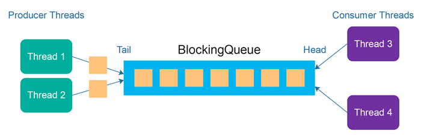
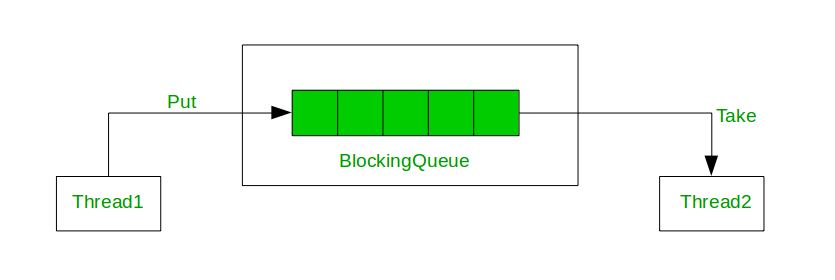

在 Java 的多線程操作中，Concurrent Queue 是一種非常重要的容器，在共享資源的同時也能夠幫我們進行流程控制。Blocking Queue 以及 Non Blocking Queue ，兩種都是線程安全的，文章的最後會用 Blocking Queue 來實作 Producer Consumer Problem !

Non Blocking Queue 其實就是一般的 Queue，對 Queue 進行操作要馬成功要馬失敗，無論如何會立刻知道結果。ConcurrentLinkedQueue 使用 CAS (Compare-And-Swap) 的機制來實現同步功能，對於響應式的應用來說，等待時間通常是不被允許的，這時候 Non Blocking Queue 會是好選擇。
什麼是 CAS (Compare-And-Swap) ?
Blocking Queue 相比於 Non Blocking Queue 多了阻塞等待 的動作，大部分的 Concurrent Queue 都是屬於 Blocking Queue，如 ArrayBlockingQueue 、LinkedBlockingQueue 等，其阻塞是基於 Lock 來實現的，具體來說 Blocking Queue 多了四種操作:

put(e) : 從尾部放入元素，如果佇列已滿則阻塞等待，直到出現空位並放入。take(e) : 從頭部取出元素，如果佇列為空則阻塞等待，直到出現元素並取出。offer(e, 時間, 時間單位) : 從尾部放入元素，如果佇列已滿則阻塞等待一段時間，超過時間則停止等待並回傳 false。poll(e, 時間, 時間單位) : 從頭部取出元素，如果佇列已滿則阻塞等待一段時間，超過時間則停止等待並回傳 false。
用一個簡單的 Producer Consumer Problem 來練習：
6 Producers * 5 messages --> 3 Consumers * 10 messages
使用 LinkedBlockingQueue 作為傳遞訊息的容器
Producer 使用 put() 將訊息放入 queue，因為沒有限制長度所以基本不會阻塞
Consumer 使用 take() 將訊息從 queue 中取出，因為 要等 Producer 產出訊息所以會阻塞
1 2 3 4 5 6 7 8 9 10 11 12 13 14 15 16 17 18 19 20 21 22 23 24 25 26 27 28 29 30 31 32 33 34 35 36 37 38 39 40 41 42 43 44 45 46 47 48 49 50 51 52 53 54 55 56 57 58 59 60 61 62 63 64 65 66 67 68 69 70 71 72 73 74 import java.util.*;import java.util.concurrent.TimeUnit;import java.util.concurrent.BlockingQueue;import java.util.concurrent.LinkedBlockingQueue;class RandomSleep { private Random rand = new Random (); RandomSleep(int second){ try { TimeUnit.MILLISECONDS.sleep(rand.nextInt(second)); } catch (InterruptedException e) { e.printStackTrace(); } } } class Producer extends Thread { private int idx; private BlockingQueue<Integer> queue; Producer(int idx, BlockingQueue<Integer> queue){ this .idx = idx; this .queue = queue; } public void run () { for (int i=0 ; i<5 ; i++){ try { new RandomSleep (500 ); queue.put(idx); }catch (InterruptedException e){ e.printStackTrace(); } } } } class Consumer extends Thread { private int idx; private BlockingQueue<Integer> queue; private Queue<Integer> reveived = new LinkedList <>(); Consumer(int idx, BlockingQueue<Integer> queue){ this .idx = idx; this .queue = queue; } public void run () { while (reveived.size() < 10 ){ try { reveived.offer(queue.take()); }catch (InterruptedException e){ e.printStackTrace(); } } System.out.println("Consumer " + idx + " received: " + reveived); } } public class ConsumerProducerProblem { static BlockingQueue<Integer> queue = new LinkedBlockingQueue <>(); public static void main (String[] args) { for (int i=1 ; i<7 ; i++){ new Producer (i, queue).start(); } for (int i=1 ; i<4 ; i++){ new Consumer (i, queue).start(); } } }
執行結果如下，每次跑都會不太一樣：
1 2 3 Consumer 2 received: [1, 3, 4, 2, 4, 5, 4, 1, 3, 3] Consumer 1 received: [6, 1, 3, 5, 1, 2, 4, 6, 4, 2] Consumer 3 received: [2, 6, 5, 5, 5, 1, 2, 6, 3, 6]
A Guide to Concurrent Queues in Java LinkedBlockingQueue与ConcurrentLinkedQueue的区别